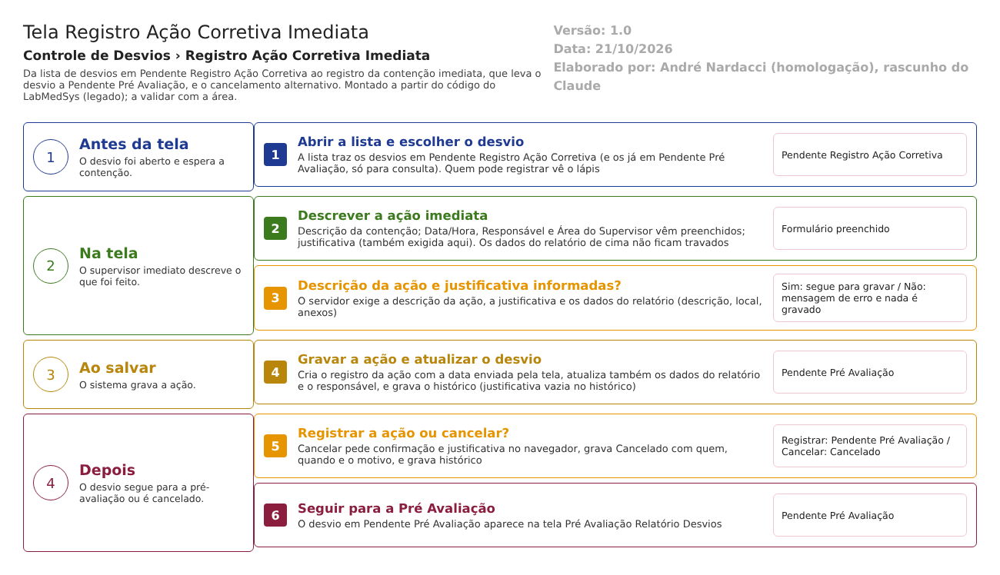

-
- Abrir a lista. O usuário abre Registro Ação Corretiva Imediata e pesquisa. A lista traz os desvios em Pendente Registro Ação Corretiva (e os que já estão em Pendente Pré Avaliação, só para consulta).
-
- Escolher o desvio e abrir a tela de registro. O usuário clica no lápis. O sistema mostra o relatório e o quadro da ação, com Data/Hora, Responsável e Área do Supervisor preenchidos.
-
- Preencher e salvar. O usuário escreve a descrição da ação, confere a justificativa, clica em Salvar e confirma. O sistema valida a descrição da ação, a justificativa e os dados do relatório.
-
- Gravar. O sistema grava a ação como registro novo, atualiza também os dados do relatório, grava o histórico e leva o desvio a Pendente Pré Avaliação. Aparece "Alteração efetuada com sucesso."
-
- Seguir. O desvio aparece na tela Pré Avaliação Relatório Desvios.
- Saídas alternativas: recusa por descrição da ação vazia ou justificativa vazia (mensagem e nada é gravado); Voltar (sai sem salvar); cancelamento pela lixeira, com confirmação e justificativa, que leva a Cancelado e grava histórico.
Situações e histórico
Situação de entrada e de saída
| Operação | Situação de entrada | Situação de saída | Fonte |
|---|---|---|---|
| Registrar a ação | Pendente Registro Ação Corretiva | Pendente Pré Avaliação | HSolutions.GQ.UI/Areas/Bloco2/Controllers/AcaoCorretivaImediataRDController.cs:182 |
| Cancelar | Pendente Registro Ação Corretiva | Cancelado | HSolutions.GQ.UI/Areas/Bloco2/Controllers/AcaoCorretivaImediataRDController.cs:373 |
| Visualizar, Imprimir e Histórico | Pendente Registro Ação Corretiva ou Pendente Pré Avaliação (as duas aparecem na lista) | Não muda | HSolutions.GQ.UI/Areas/Bloco2/Controllers/AcaoCorretivaImediataRDController.cs:62-64 |
O servidor não confere a situação de entrada nas duas gravações (RN-GQ-D02-009 e D02-011).
O que grava na trilha de auditoria (histórico)
- Registrar a ação: histórico de alteração (HSolutions.GQ.UI/Areas/Bloco2/Controllers/AcaoCorretivaImediataRDController.cs:304). Fica um registro por campo que mudou (por exemplo a Situacao, de Pendente Registro Ação Corretiva para Pendente Pré Avaliação, e qualquer campo do relatório que tenha sido alterado), com usuário, data e hora. A justificativa do histórico fica vazia (RN-GQ-D02-005). Inferência: o registro novo da ação pode aparecer só como ligação nova entre o desvio e a ação; o código calcula um registro de inclusão para o que foi adicionado, mas não o grava (HSolutions.GQ.Infrastructure/Repository/RepositoryBase.cs:388-390). A confirmar no teste.
- Cancelar: histórico de alteração (HSolutions.GQ.UI/Areas/Bloco2/Controllers/AcaoCorretivaImediataRDController.cs:379), com a mudança de situação, o nome de quem cancelou, a data e o motivo. A justificativa do histórico também fica vazia (o motivo aparece como valor novo do campo JustificativaCancelamento).
O que não grava
- A data e a hora que a tela envia não passam pelo relógio do servidor (RN-GQ-021).
- A justificativa digitada no registro da ação não entra na coluna Justificativa do histórico (HSolutions.GQ.Infrastructure/Repository/RepositoryBase.cs:322).
- O usuário de criação da ação (ID_USUARIO_CRIACAO) não é preenchido pelo código (fica zero); o responsável fica nas colunas próprias da ação (Inferência, a confirmar no teste) (HSolutions.GQ.UI/Areas/Bloco2/Controllers/AcaoCorretivaImediataRDController.cs:190-199).
- Visualizar, Imprimir e consultas não gravam nada.
- Tabelas do histórico: TBL_LOG_ALTERACAO_GQ e TBL_LOG_ALTERACAO_GQ_ITEM, fora do projeto de banco (RN-GQ-005, a confirmar com o DBA).
Dados
Tabelas da GQ tocadas
| Tabela | Colunas principais | Chaves e ligações | Para que serve nesta tela |
|---|---|---|---|
| TBL_ACAO_CORRETIVA_IMEDIATA | ID_ACAO_CORRETIVA_IMEDIATA, Descricao, IdResponsavel, NomeResponsavel, IdAreaResponsavel, NomeAreaResponsavel, DATA_CRIACAO, ID_USUARIO_CRIACAO, ATIVO, LIXEIRA | Chave própria; ligada ao desvio por AcaoCorretivaImediata_Id em TBL_REGISTRO_RNC | A ação imediata |
| TBL_REGISTRO_RNC | Situacao, Descricao, Observacao, Justificativa, IdResponsavel, NomeResponsavel, IdAreaResponsavel, NomeAreaResponsavel, NomeUsuarioCriacao, IdLocalOcorrencia, NomeLocalOcorrencia, JustificativaCancelamento, NomeResponsavelCancelamento, DataCancelamento, AcaoCorretivaImediata_Id | Chave: ID_REGISTRO_RNC | O desvio, lido e atualizado |
| TBL_ITEM_REGISTRO_DESVIO, TBL_LOTE, TBL_REGISTRO_ENTRADA | TipoItem, descrição do item, número e descrição do lote, registro de entrada | Item, lote e registro encadeados | Item e lotes, também editáveis aqui |
| TBL_ANEXO | arquivo, descrição, chave da pasta, tamanho | Liga ao desvio | Anexos |
| TBL_LOG_ALTERACAO_GQ e TBL_LOG_ALTERACAO_GQ_ITEM | campo, valor antigo, valor novo, usuário, data, justificativa | Pelo nome do objeto e id | Histórico (fora do projeto de banco) |
Fontes: Hsolutions.GQ.DB/Tables/TBL_ACAO_CORRETIVA_IMEDIATA.sql, TBL_REGISTRO_RNC.sql, TBL_ITEM_REGISTRO_DESVIO.sql, TBL_LOTE.sql, TBL_REGISTRO_ENTRADA.sql, TBL_ANEXO.sql; HSolutions.GQ.Context/Configurations/Bloco2/ControleDesvio/AcaoCorretivaImediataConfiguration.cs:15.
O que lê ou grava em outros módulos
| Módulo | O que faz | Meio | Fonte |
|---|---|---|---|
| Principal | Lê o nome da área do usuário e dos locais; lê equipamentos (busca pelo item); lê a área do usuário para decidir os ícones | API do Principal (Area, Equipamento) | HSolutions.GQ.Services/Principal/AreaService.cs:14-70; HSolutions.GQ.Services/Principal/EquipamentoService.cs:13-40 |
| Estoque | Lê itens e lotes (a chamada vai ao endereço da Produção) | API (Estoque/GetItensPorDescricao) | HSolutions.GQ.Services/Estoque/EstoqueService.cs:17-22; HSolutions.GQ.UI/Areas/Bloco2/Controllers/AcaoCorretivaImediataRDController.cs:481-526 |
| Produção | Lê produtos e lotes | API (ConsultarProduto/GetListarProdutosLotesPorDescricao) | HSolutions.GQ.Services/Producao/ProdutoService.cs:66-71; HSolutions.GQ.UI/Areas/Bloco2/Controllers/AcaoCorretivaImediataRDController.cs:494-509 |
| Todos | Não grava em outro módulo | Sem integração de escrita | HSolutions.GQ.UI/Areas/Bloco2/Controllers/AcaoCorretivaImediataRDController.cs:161-326 |